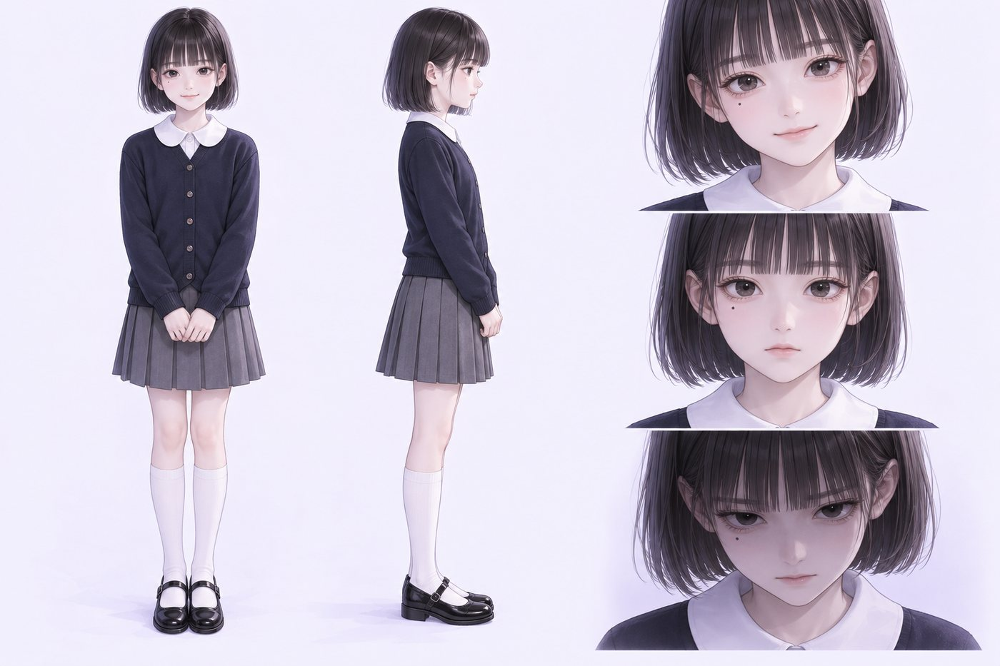
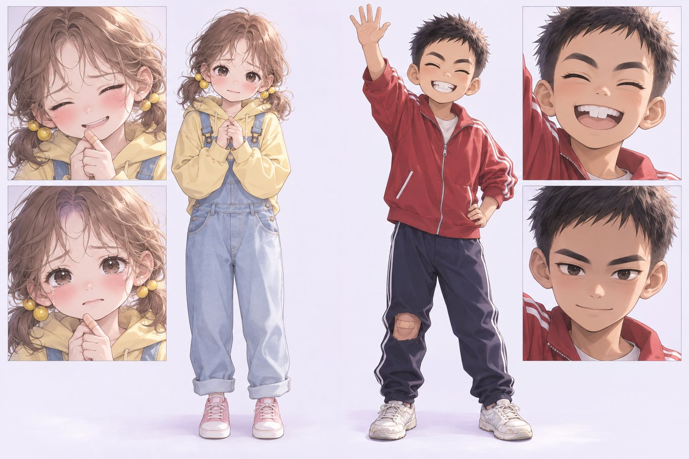
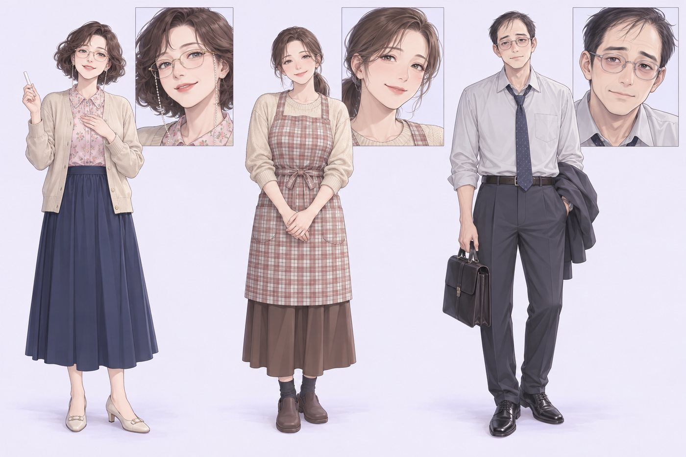
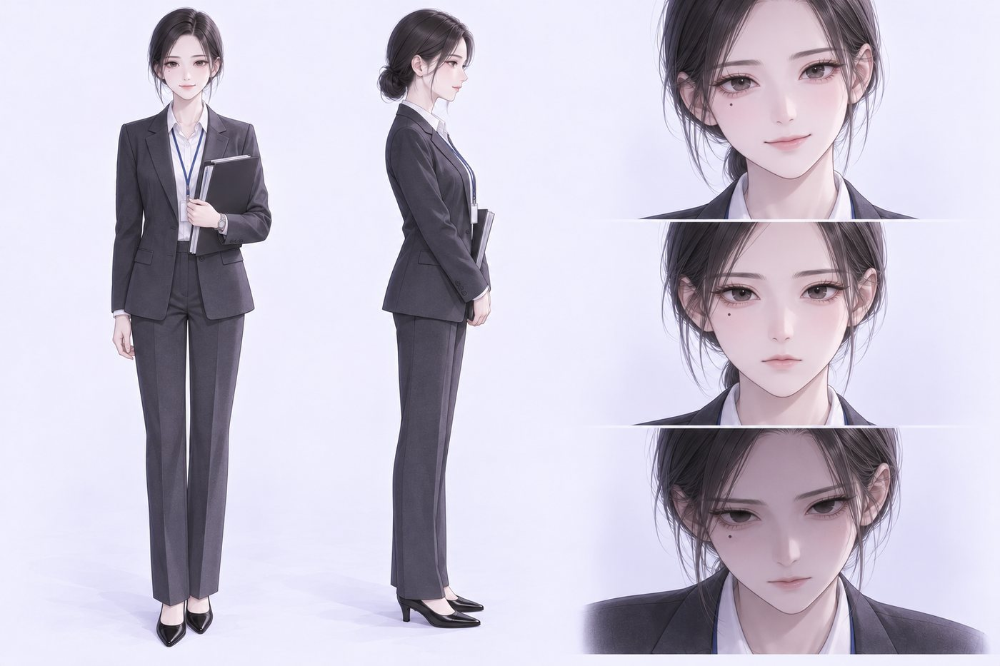
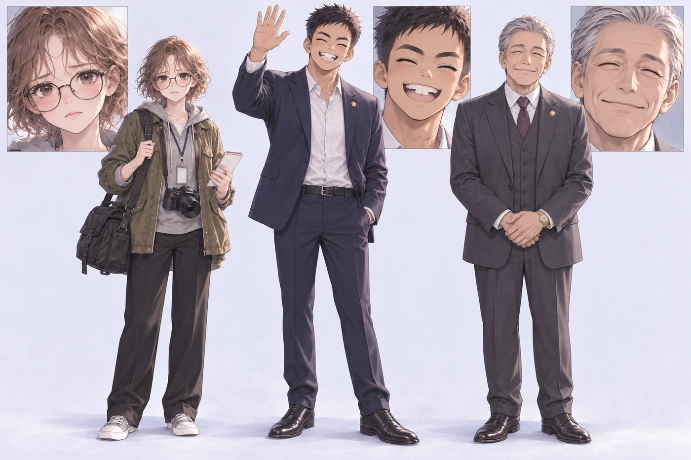

권세아 (權世娥)
주인공 · 해설
- 턱선 단발에 일자 앞머리, 오른쪽 눈 밑의 작은 점. 인형처럼 단정한 모범생.
- 한 번도 손을 들지 않지만 선생님이 가장 믿는 아이. 속으로는 모든 사람을 '쓸모'로 분류한다.
- 말버릇 “괜찮아, 내가 있잖아.” / 속말 “아무것도 모르면서.”
- 아크: 나는 영리한 아이다 → 나는 폭력적이다 → 나는 권력을 원한다 → 나는 특별하지 않다 → 이제 나는 나를 안다.
등장인물
설정화는 작화 엔진에 참조 이미지로 함께 넣어 컷마다 얼굴·머리·옷을 고정하는 데 썼습니다.

주인공 · 해설

쉬운 아이, 그리고 진실을 외치는 아이
나서는 아이, 그리고 임금

4학년 3반 담임 · 아는 척하는 어른
엄마
아빠

국회의원 전진우 의원실 수석보좌관

탐사보도 기자
최연소 국회의원
5선 국회의원 · 4부의 거울
| 인물 | 등장 | 역할 |
|---|---|---|
| 유리 엄마 | 1부 | 세아를 고마워하며 딸을 맡긴다. "세아 같은 친구가 있어서 다행이에요." |
| 보미 | 1부 | 4학년 3반 반장, 또 다른 나서는 아이. 세아의 MP3를 훔쳤다는 누명을 쓴다. |
| 학원 원장 | 1부 · 4부 | 6학년 전교회장 선거 상대 아이의 부모. 4부에서는 해원 구도심 재개발 조합장이 되어 진우의 출판기념회에서 봉투를 내민다. |
| 한채린 | 2부 | 해원중 여학생 위계의 정점. 세아의 방식을 흉내 내 세아를 고립시키려다 세아가 처음 '손을 쓴' 상대가 된다. 4부에서 눈썹의 흉터와 함께 증언한다. |
| 다은 | 3부 | 대나무숲 소문의 희생자. 세아에게 상담을 청했다가 더 깊이 밀려난다. |
| 최민석 | 3부 | 해원고 학생회장 후보, 재단 이사장 손자. 세아가 양쪽 캠프 연설문을 동시에 쓰고 있다는 걸 알아챈다. |
| 국승호 | 4부 | 3선 구청장 출신 공천 경쟁자. 짜깁기된 '갑질 녹취'로 무너진다. "저는 그런 말을 한 적이 없습니다." |
| 한소율 | 4부 | 진우를 동경하던 대학생 자원봉사자, 뒤에 의원실 인턴. 이름이 착신전환 회선에 쓰이고, 진실에 다가가자 비위를 뒤집어쓰고 쫓겨난다. 4부의 '쉬운 아이'. |
| 전진호 | 4부 | 진우의 동생. 자라 온 반지하 골목이 재개발로 밀린다. "형이 막아 준다며." |